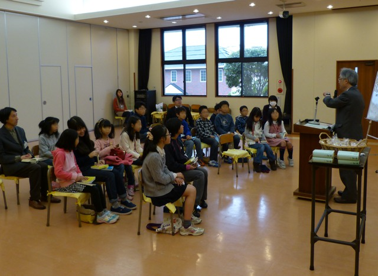
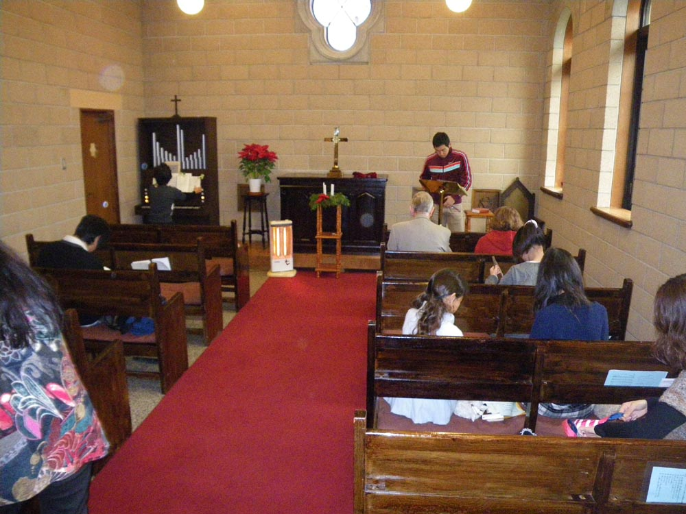
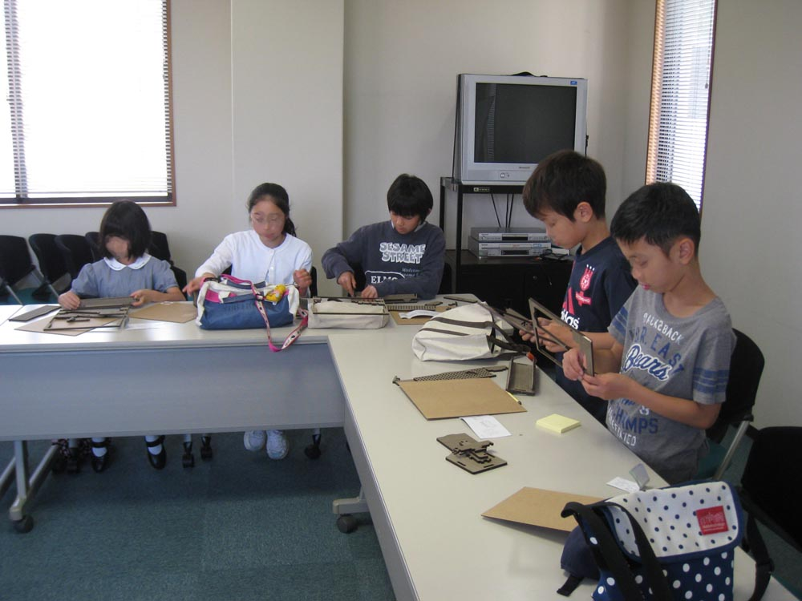
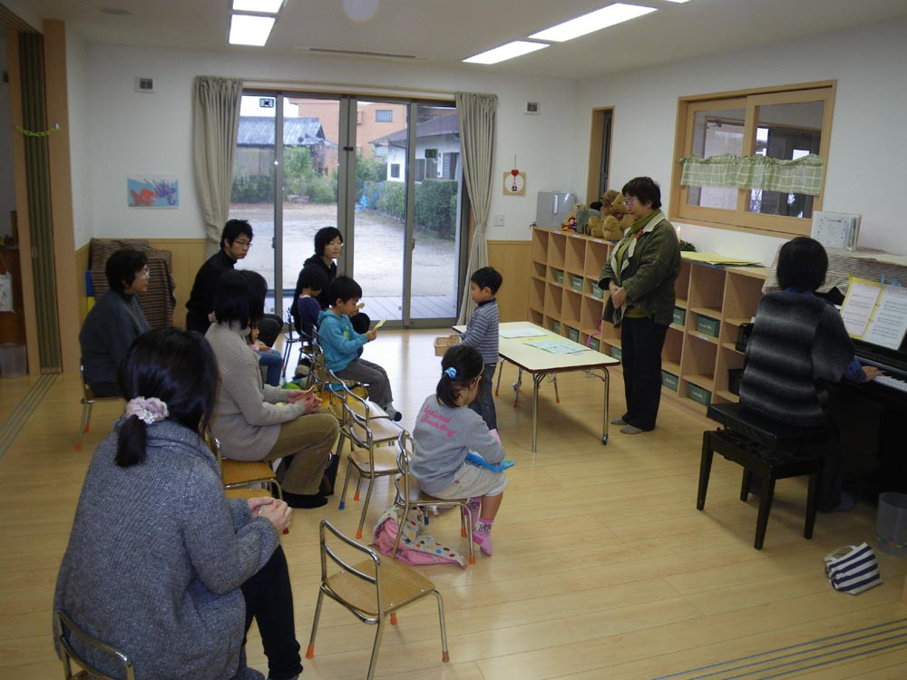

|
「わたしは誰で、いったいどういう人間なのだろうか？」 |
  |
|
  |
時間
毎週日曜日AM9:00-10:00
(成人科は9:30から） 活動
礼拝
幼児科・小学科・中高科の三つのこども向けの礼拝を持ち、それぞれの関心と年齢にあった言葉で聖書の豊かなメッセージを聴きます。
分級
礼拝後の時間に学年ごとに各クラスに分かれて、聖書の学びや、制作活動などをします。
また成人科では、牧師や伝道師によるキリスト教についての基礎的な学びや疑問にお答えする時間を持ちます。 季節ごとに
教会でしか味わえない本物のクリスマス（降誕祭）、イースター（復活祭）をお祝いします。
その他、夏期学校、お楽しみ会など季節ごとに楽しい行事があります。 教師
個性豊かな大和キリスト教会の教会員が担っています。
成人科では牧師や伝道師が直接担っています。 生徒
幼児から成人まで、お家の宗教に関係なく地域からたくさんのお友達が集まっています。
|